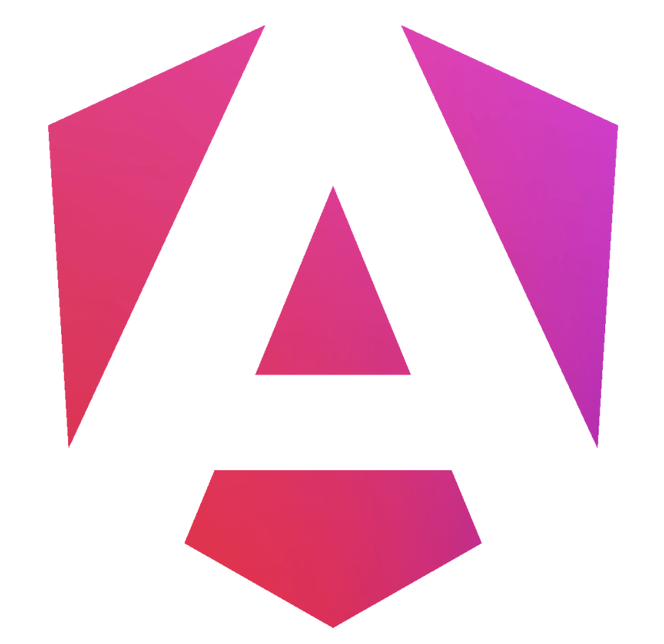
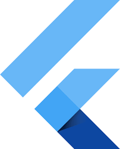
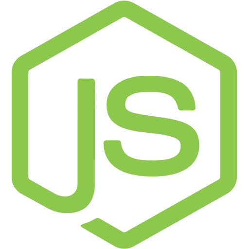
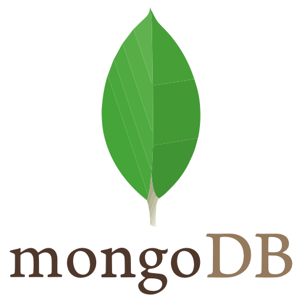

Elecció de l'estratègia tecnològica
En aquesta entrada expliquem les decisions que hem pres per definir el nostre stack tecnològic. L'objectiu era escollir les eines més adequades per a cada part del projecte, tenint en compte el tipus d'aplicació, la facilitat de desenvolupament, l'escalabilitat i l'experiència d'usuari.
Per al projecte hem decidit utilitzar Angular al Backoffice, React a la WebApp, Flutter a l'App mòbil, Node.js amb Express i TypeScript al Backend i MongoDB com a base de dades.

Per al Backoffice hem escollit Angular perquè és una tecnologia
molt adequada per crear aplicacions d'administració. Ens permet treballar amb una
estructura clara, separant components, serveis i funcionalitats internes.
Com que el Backoffice necessita gestionar dades, formularis i diferents pantalles d'administració, Angular ens ajuda a mantenir el projecte ordenat i fàcil d'ampliar.
 WebApp: React
WebApp: React
Per a la WebApp hem escollit React perquè és una opció molt adequada
per desenvolupar interfícies web dinàmiques i reutilitzables. La nostra WebApp s'utilitza
des del navegador, així que React encaixa millor que React Native en aquest cas.
Hem descartat React Native per a la WebApp perquè està pensat principalment per crear aplicacions mòbils natives. En canvi, React ens permet treballar directament amb tecnologies web, facilitant el disseny responsive, l'accessibilitat i la integració amb elements com les rutes, els mapes, els favorits i el xat entre usuaris.

Per a l'App mòbil hem escollit Flutter perquè ens permet crear una
aplicació mòbil multiplataforma amb una experiència molt propera a una app nativa.
Amb una mateixa base de codi podem desenvolupar per a diferents dispositius i mantenir
una interfície visual coherent.
També hem valorat React Native, però finalment hem escollit Flutter perquè ens ofereix més control sobre el disseny, els components visuals i l'experiència d'usuari. Això ens ajuda a construir millor pantalles com el login, el registre, l'inici, les rutes, els favorits, el xat i les opcions d'accessibilitat.
 Backend: Node.js, Express i TypeScript
Backend: Node.js, Express i TypeScript
Per al Backend utilitzem Node.js amb Express i TypeScript, ja que ens
permet crear una API flexible, clara i fàcil de mantenir. TypeScript ens ajuda a tenir
un codi més segur i organitzat.

Com a base de dades hem escollit MongoDB, perquè la seva estructura
basada en documents s'adapta bé a les dades del nostre projecte, com usuaris, rutes,
punts d'interès i xats.
Conclusió
Amb aquesta estratègia tecnològica, cada part del projecte utilitza l'eina que millor
s'adapta a les seves necessitats. Angular ens dona solidesa al Backoffice, React ens
permet crear una WebApp àgil i accessible, Flutter ens ajuda a oferir una bona experiència
mòbil, i Node.js amb MongoDB formen una base flexible per connectar tot el sistema.